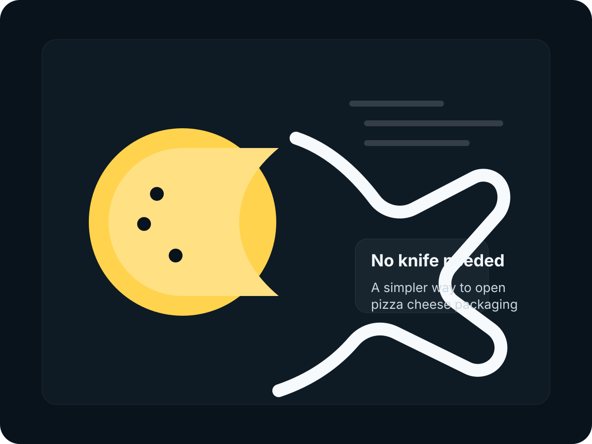
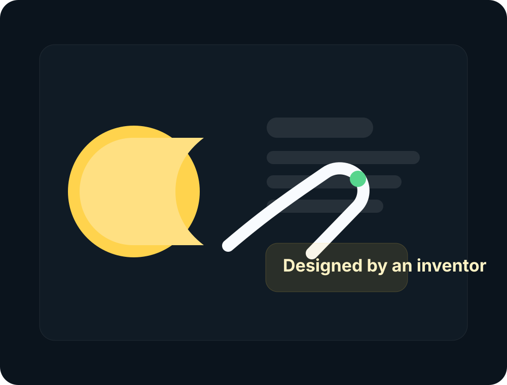

The problem
The outer layer around pizza cheese can be difficult to remove neatly. Manual handling can waste time and create friction during preparation.
CheezCut is a simple invention concept created to remove the outer seal or packaging around pizza cheese more easily—without using hands or a knife. It is cleaner, more controlled, and built around a small but real kitchen problem.

In many kitchens, opening pizza cheese packaging is still done by hand or with a knife. That can be slow, awkward, inconsistent, and sometimes unsafe. CheezCut was created to simplify that exact moment.
The outer layer around pizza cheese can be difficult to remove neatly. Manual handling can waste time and create friction during preparation.
A focused tool that helps separate the outer packaging or seal more easily, reducing the need to cut it manually with a knife.
A more straightforward process for restaurants, pizza kitchens, and food preparation environments where speed and cleanliness matter.

CheezCut started with a simple observation: some of the most annoying tasks in food preparation are not complicated—they are just repeated constantly. When a task is repeated enough, even a small improvement can make a real difference.
That is the thinking behind this concept. Instead of accepting a messy, manual step, the idea was to create a dedicated solution that feels obvious once you see it.
Turns an annoying preparation step into a more deliberate and efficient action.
Reduces reliance on sharp tools for a repetitive kitchen motion.
Supports tidier handling when opening pizza cheese packaging.
Especially meaningful for restaurants, pizzerias, and prep-heavy food environments.
This website presents the concept, the product logic, and the inventor story. It is designed to introduce CheezCut in a clean and professional way to partners, manufacturers, interested buyers, or anyone following the idea early.
CheezCut is not currently available for direct purchase. There is no active checkout, no public store, and no commercial sales flow at this stage.
Improve the concept, dimensions, ergonomics, and user experience based on testing and feedback.
Create or iterate on prototype versions suitable for practical kitchen evaluation.
Gather responses from restaurants, pizza shops, kitchen teams, or manufacturing partners.
Move toward production only when the design, utility, and business path are ready.
No. CheezCut is currently presented as an invention concept and is not for sale yet.
It is designed to make removing the outer packaging or seal around pizza cheese easier, cleaner, and less dependent on using a knife.
CheezCut is presented as an invention by Amir Mobasheraghdam.
Pizzerias, food preparation teams, restaurants, kitchen equipment partners, and anyone interested in small-format kitchen utility products.